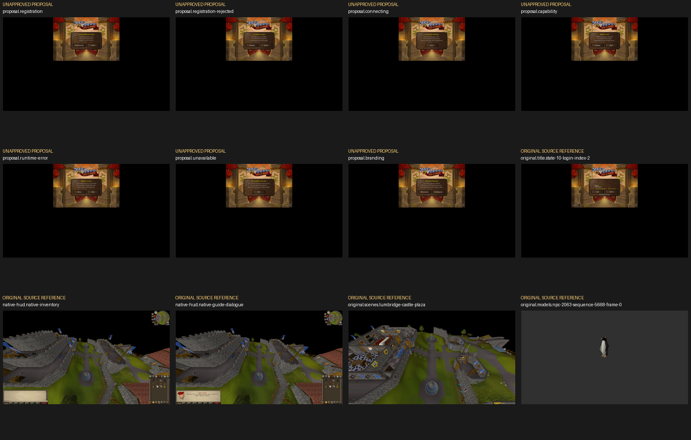

Overall reference-pack approval is pending. This is source evidence and explicit proposals, not ClubScape or an accepted renderer/gameplay run. The two audio selector adaptations were approved separately by the owner; they are not verified current OSRS selectors.
Exact manifest SHA-256:b62e19704e17d3d3e4e819f803ef49ba7cc54034ae407184b423427c65d9674d
Manifest | Full indexed gallery | Review contact sheet | Exact review scope | Numeric policy | Qualified audio bindings
126cases/71states,29families/180distinct variants,109original runtime images,100public images, nine recording frames,698 pinned text records,264 corrected FLACs and two exact source cue WAVs.
Native titlebox779,171,360x200; source sprites499/500 and native fonts495/496. Registration, rejection, connecting, capability/runtime/scope feedback and branding are proposals, not OSRS captures or an implemented frontend. Final logo artwork is not fabricated.
Use original idle5668/walk5666 frames; preserve all functional slots. Proposed attachment gap<=2 source units, unintended penetration<=1; no ordinary tree/goblin/scenery redesign.
Exact native sprites/fonts/values; full-panel coverage; source scene interior max2 8-bit channel error/mean0.35 and1px source-edge allowance. Source audio PCM exact, existing browser float bound0.000023. Read comparison-policy.json for all per-case rules.
Owner record milestones/m1-audio-trigger-approval.json, SHA-256
d6f187cd182741421cbc14420dbb8eb60411cd478f3c15be3cd740c081731c30.
Learning the Ropes uses original152 once at legitimate committed completion; ordinary shrimp315/bread2309
use2393 once at12526 frame1/four client cycles. No duplicate callbacks or double-added waveform offsets.
Both remain approved_adaptation. Cook retains dated observed152, then post-dismissal
reward-level-up; native last-accepted-request-wins is unchanged.

All required input/family/hash checks must pass. Final candidate/source-fidelity behavior, actual playback and Mac Chrome/Edge measurements remain separate unrun acceptance obligations.
{kind=link}